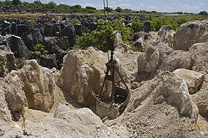

Economy of Nauru
|  | |
| Currency | Australian dollar (A$ or AUD) |
|---|---|
| 1 July – 30 June | |
Country group |
|
| Statistics | |
| Population | |
| GDP | |
| GDP rank | 214th (nominal) / 223rd (PPP) |
GDP growth |
|
GDP per capita | |
GDP by sector | Agriculture: 6.1%, industry: 33%, services: 60.8% (2009 est.) |
| Unemployment | 25% (2011)[10] |
Main industries | Phosphate mining, offshore banking, coconut products |
| External | |
| Exports | US$135 million (2015 est.)[11] |
Export goods | fish, calcium phosphates, low-voltage protection equipment, air conditioners, leather apparel[11] |
Main export partners |
|
| Imports | US$64.9 million (2016 est.)[11] |
Import goods | refined petroleum, construction vehicles, tug boats, poultry meats, cars[11] |
Main import partners | |
Gross external debt | US$33.3 million (2004 est.)[11] |
| Public finances | |
| 62% of GDP (2017 est.)[11] | |
| Revenues | US$103 million (2017 est.)[11] |
| Expenses | US$113.4 million (2017 est.)[11] |
All values, unless otherwise stated, are in US dollars. | |
.jpg){kind=link}
{kind=link}
{kind=link}
The economy of Nauru is tiny, based on a population in 2019 of only 11,550 people.[12] The economy has historically been based on phosphate mining. With primary phosphate reserves exhausted by the end of the 2010s, Nauru has sought to diversify its sources of income. In 2020, Nauru's main sources of income were the sale of fishing rights in Nauru's territorial waters, and revenue from the Regional Processing Centre[13] (an offshore Australian immigration detention facility).
Nauru is dependent on foreign aid, chiefly from Australia, Taiwan and New Zealand.
Economic performance
[edit]In the years after independence in 1968, Nauru possessed the highest GDP per capita in the world due to its rich phosphate deposits. In anticipation of the exhaustion of phosphate deposits, a substantial amount of the income from phosphates was invested in trust funds aimed to help cushion the transition and provide for Nauru's economic future. However, because of heavy spending, including poor foreign investment, the government is now facing bankruptcy. To cut costs the government called for a freeze on wages, a reduction in public service staffing, privatization of numerous government agencies, and closure of some of Nauru's overseas consulates. Economic uncertainty caused by financial mismanagement and corruption, combined with shortages of basic goods, resulted in domestic unrest. In 2004 Nauru was faced with chaos amid political strife and the collapse of the island's telecommunications system. Moreover, the deterioration of housing and hospitals has continued.
Few comprehensive statistics on the Nauru economy exist, with estimates of Nauru's GDP varying widely. According to the U.S. State Department, Nauru's GDP volume was US$1 million in 2004.[need quotation to verify] Nauru receives about US$20 million foreign aid a year from Australia.[14]
The nation's economy has grown significantly since 2012, with help from the reopening of the Nauru Regional Processing Centre, funded by Australia.[15]
The most recent 2022-23 Nauru Budget recognized expected revenues of $252.5 million and expenditure of $251.9 million (20% increase from Budget 2021–2022) with a $549,000 surplus balance. The surplus will provide cash reserves at the bank and support Nauru with economic uncertainty.[13]
Balance of payments
[edit]Phosphate is Nauru's only export product, although the government also receives relatively significant foreign exchange income from licensing its rich skipjack tuna fishing grounds to foreign fishing vessels, which land an annual average of 50,000 tonnes of Nauru zone-caught tuna overseas.[16] In 2004 income from phosphate export was US$640,000, with Australia, New Zealand and Japan serving as the country's major export markets. In the same year the Nauru government budget shows that income from licensing foreign fishing vessels was over US$3,000,000.
Nauru needs to import almost all basic and capital goods, including food, water, fuel, and manufactured goods, with Australia and New Zealand as its major import sources. In 2004 Nauru's imports totaled about US$19.8 million.[14]
Finance
[edit]Nauru has been a cash economy since at least 2004, after the Bank of Nauru and the Republic of Nauru Finance Corporation went bankrupt and ceased operations in the early 2000s and the licenses of all offshore banks were revoked by the Nauru government in 2004.[17] Nauru uses the Australian dollar for its currency. Most government payments are executed through electronic funds transfer. Electronic funds transfer at point of sale was introduced in 2020. The government is required to periodically fly in Australian currency to maintain liquidity.
On 2 June 2015, an agency of Bendigo and Adelaide Bank, Australia's fifth largest bank, was established in Nauru by the Department of Finance.[18][19] Effective from the end of April 2016, Westpac, one of Australia's largest banks, ceased having any dealings with the Nauru government.[20] On 21 April 2016, it was announced that the Bendigo Bank was facing pressure to also close its operation in Nauru.[21]
On 14 November 2023, Bendigo and Adelaide Bank announced its intentions to cease operation in Nauru by December 2024.[22] On 24 January 2024, Nauru formally re-establishes diplomatic ties with the People's Republic of China after withdrawing recognition of Taiwan.[23] In early March 2024, the Bank of China sent a delegation to Nauru to discuss its banking problems. On 18 March, Bendigo and Adelaide Bank announced its intention to delay its exit from Nauru, from December 2024 to July 2025.[24]
Taxation
[edit]On October 1, 2014, an income tax was imposed in Nauru for the first time, with high income earners paying a flat rate of 10%. The government spending in 2015 was forecast to be under US$92 million.[25] Taxes include an airport departure tax and a bed tax at the Meneñ Hotel. The 2007–08 Budget saw the increase of existing excises on cigarettes and duty on imports. A tax on sugary foods was also introduced, chiefly to help combat Nauru's diabetes epidemic.[26]
Tax haven status
[edit]Historically Nauru was regarded as a tax haven due to the operation of its international financial centre, which offered amongst other things offshore banking services.[27] In 2001, Nauru was blacklisted internationally over concerns it had become a haven for money laundering.[19] Amendments made in 2004 abolished Nauru's Offshore Banking sector and, as recognised in Nauru's latest anti-money laundering and combating the financing of terrorism (AML/CFT) review, Nauru's offshore sector is now limited to a small offshore company register.[28]
In July 2017 the Organisation for Economic Co-operation and Development (OECD) upgraded its rating of Nauru's standards of tax transparency. Nauru had been listed alongside fourteen other countries that had failed to show that they could comply with international tax transparency standards and regulations. The OECD subsequently put Nauru through a fast-tracked compliance process and the country was given a "largely compliant" rating.[29]
Relationship with Australia
[edit]Currently, Nauru is heavily dependent on Australia as its major source of financial support. In 2001 Nauru signed an agreement with Australia to accommodate asylum seekers (mostly from Iraq and Afghanistan) on the island, in return for millions of dollars in aid. This agreement, referred to as the "Pacific Solution", came to an end in 2007, prompting Nauruan concerns about the future of the island's revenue.[30] Australia has also sent financial experts to Nauru to help the tiny nation overcome its economic problems. However, serious questions remain about the long-term viability of Nauru's economy, with uncertainties about the rehabilitation of mined land and the replacement of income from phosphates.[14]
In 2008, talks began between Australia and Nauru regarding the future of the former's economic development aid to the latter. Nauruan Foreign and Finance Minister Dr. Kieren Keke stated that his country did not want aid handouts. One possible solution currently being explored would be for Australia to assist Nauru in setting up a "boat repair industry" for regional fishing vessels.[31]
Nauru detention centre
[edit]The Nauru detention centre was established by the Australian government, with Nauruan agreement, in 2001 to cater for up to 800 refugees and asylum seekers under Australia's Pacific solution. The centre is seen by Nauruans as an important source of employment opportunities, in addition to the pledge of A$20 million for development activities.[citation needed]
Economic statistics
[edit]- GDP: purchasing power parity - US$60 million (2001 est.)
- GDP per capita: purchasing power parity - US$5,000 (2001 est.)
- Inflation rate (consumer prices): -3.6% (1993)
- Budget: revenues: US$23.4 million; expenditures: US$ million (1995/96)
- External debt: US$33.3 million
- Economic aid - receives around US$2.25 million from Australia (1996/97 est.)
- Currency: Australian dollar
The fiscal year runs from July 1 to June 30.
Employment
[edit]- Labour force are mainly employed in mining phosphates, public administration by RONPhos, education and transport
- In 2004, the unemployment rate was close to 90%.[11] In February 2008, foreign affairs minister Dr. Kieren Keke stated: "We have got a major unemployment crisis in front of us."[32] By 2011, the unemployment rate had decreased to 23%.[11]
- Main industries are phosphate mining, offshore banking, coconut products
- Electricity production (fossil fuels) and consumption are around 30 GWh (2000)
- Agriculture is not a major employer, coconuts are the main produce
Data
[edit]The following table shows the main economic indicators in 2004–2022 (with IMF staff estimates for 2019–2027). Inflation below 3% is in green.[33]
| Year | GDP
(in Bil. US$PPP) |
GDP per capita
(in US$ PPP) |
GDP
(in Bil. US$nominal) |
GDP per capita
(in US$ nominal) |
Inflation rate
(in Percent) |
Government debt
(in % of GDP) |
|---|---|---|---|---|---|---|
| 2004 | n/a | n/a | ||||
| 2005 | n/a | |||||
| 2006 | n/a | |||||
| 2007 | n/a | |||||
| 2008 | n/a | |||||
| 2009 | ||||||
| 2010 | ||||||
| 2011 | ||||||
| 2012 | ||||||
| 2013 | ||||||
| 2014 | ||||||
| 2015 | ||||||
| 2016 | ||||||
| 2017 | ||||||
| 2018 | ||||||
| 2019 | ||||||
| 2020 | ||||||
| 2021 | ||||||
| 2022 | ||||||
| 2023 | ||||||
| 2024 | ||||||
| 2025 | ||||||
| 2026 | ||||||
| 2027 |
Trade
[edit]- Exports - valued at US$30 million (2018). Exporting; fish, calcium phosphates, low-voltage protection equipment, air conditioners, leather apparel. Major trading partners include Thailand 34%, Australia 16%, United States 13%, and South Korea 10%.
- Imports - valued at US$90 million (2018). Importing; refined petroleum, construction vehicles, tug boats, poultry meats, cars. Major partners are Taiwan 52%, and Australia 28%.
See also
[edit]- Phosphate mining in Nauru
- Nauru Phosphate Corporation
- Nauru Phosphate Royalties Trust
- Ministry of Finance of Nauru
- Tourism in Nauru
References
[edit]- ^ "World Economic Outlook Database, April 2019". IMF.org. International Monetary Fund. Retrieved 29 September 2019.
- ^ "World Bank Country and Lending Groups". datahelpdesk.worldbank.org. World Bank. Retrieved 29 September 2019.
- ^ "Population, total - Nauru". data.worldbank.org. World Bank. Retrieved 28 December 2022.
- ^ "GDP (Current US$) - Nauru | Data".
- ^ "GDP, PPP (Current international $) - Nauru | Data".
- ^ "Real GDP growth. Annual percent change". IMF. 2023. Retrieved 27 March 2023.
- ^ "GDP per capita (Current US$) - Nauru | Data".
- ^ "GDP per capita, PPP (Current international $) - Nauru | Data".
- ^ "World Economic Outlook Database, October 2019". IMF.org. International Monetary Fund. Retrieved 20 October 2019.
- ^ "Pacific Regional Statistics - Secretariat of the Pacific Community". www.spc.int.
- ^ a b c d e f g h i j k l "Nauru". CIA World Factbook. 24 November 2020. Retrieved 8 December 2020.
- ^ 2019 Nauru Mini Census https://naurufinance.info/nauru-statistics/
- ^ a b "2022-23 Budget". Department of Finance - Nauru. Archived from the original on 2021-10-06. Retrieved 2022-12-28.
- ^ a b c "Home Page - CountryWatch". www.countrywatch.com. Retrieved 27 March 2023.
- ^ Asian Development Bank (2014). Pacific Economic Monitor: Budget Analysis. Manila: Cornell University School of Industrial and Labor Relations. p. 8.
- ^ Nauru Fisheries and Marine Resources Authority. "NFMRA Corporate Plan". Government of Nauru. Retrieved 2018-03-13.
- ^ "Find Banking and Financial Services expertise in Nauru". Nexus Commonwealth Network.
- ^ Flitton, Daniel (26 March 2014). "'Uncertainties' lead to Australian bank dumping plans for Nauru's only branch". The Sydney Morning Herald.
- ^ a b "Tiny Island Nation Of Nauru To Rebuild Its Banking System With Help From Australia". International Business Times. 4 November 2013.
- ^ Fox, Liam (14 April 2016). "Westpac bank severs ties to Nauru Government over money laundering concerns". ABC News.
- ^ Fox, Liam (21 April 2016). "Bendigo Bank facing pressure to close its operation in Nauru". PM. ABC News.
- ^ "Joint statement from Bendigo Bank and the Government of Nauru". Bendigo and Adelaide Bank. 14 November 2023. Retrieved 18 April 2024.
- ^ "China formally restores diplomatic relations with Nauru after Pacific island nation cut Taiwan ties". AP News. 2024-01-24. Retrieved 2024-01-24.
- ^ Dziedzic, Stephen (18 March 2024). "Bendigo Bank delays exit from Nauru as Chinese state-owned bank emerges as replacement". Australian Broadcasting Corporation. Retrieved 18 April 2024.
- ^ "Income taxes coming in Nauru", Radio New Zealand International, 11 June 2014
- ^ "CountryWatch - Login Page". Archived from the original on January 9, 2022.
- ^ Gravelle, Jane G. (15 January 2015). "Tax Havens: International Tax Avoidance and Evasion" (PDF). Congressional Research Service.
- ^ "Asia / Pacific Group On Money Laundering". www.apgml.org.
- ^ "Nauru gets an OECD upgrade". 12 July 2017.
- ^ "Nauru 'hit' by detention centre closure", The Age, February 7, 2008
- ^ "Nauru suggests boat repair industry" Archived 2008-05-28 at the Wayback Machine, Saipan Tribune, March 4, 2008
- ^ "Nauru 'hit' by detention centre closure". The Age. February 7, 2008.
- ^ "International Monetary Fund". IMF. 28 December 2022. Retrieved 2022-12-28.
External links
[edit]- "Nauru seeks to regain lost fortunes", Nick Squires, BBC, March 15, 2008
- "Nauru's riches to rags decline", Dan Nolan, Al Jazeera, March 17, 2008